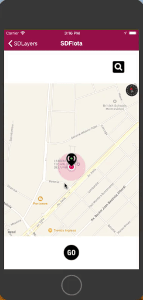
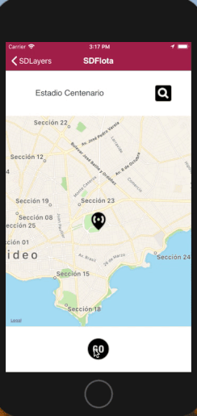

To create Native applications of the Uber or Easy taxi style, there is a set of properties associated with the Grid control whose Control Type property = Maps.
The values that are configured for these properties will be presented as Layers, allowing you to change the map’s behavior.
The Layers are as follows:
Below are more detailed descriptions of the Layers, use scenarios, the possibilities they offer, and the properties that allow you to achieve these objectives.
1. Selection Layer (Navigation to select a location)
In Maps (Grid with Control Type property = Maps) it is possible to enable a navigation mode that allows you to select a location (GeoPoint). In this navigation, in the center there is an icon that remains fixed and you can move the map to select a position (and get its coordinates). This is handled with the Selection Layer property.
When the Selection Layer property = True, at runtime it will be possible to move on the map, having a fixed icon in the center that obtains the position and triggers an event.
The navigation is similar to what is achieved using the PickLocation Method.

The icon can be configured using the Location Selection Target Image property. Also, for having configured the Selection Layer property = True, the Selection Target Image Class property is enabled to associate a class to that image (by default there is a class created under the name: SDMapPinImage).
In addition, for having configured the Selection Layer property = True, two events are available: ControlValueChanging and ControlValueChanged.
ControlValueChanging(GeoPoint) event
This event is triggered while the map is moving. For example:
Event Grid1.ControlValueChanging(&geoPoint)
composite
msg(&geoPoint.Tostring())
endcomposite
Endevent
ControlValueChanged(GeoPoint) event
This event is triggered when you stop moving the map. For example:
Event Grid1.ControlValueChanged(&geoPoint)
composite
msg(&geoPoint.Tostring())
endcomposite
Endevent
In the GeoPoint type parameter you get the position to which the map was moved.
The code in the example shows the string corresponding to the position to which the map was moved (i.e.: POINT(Long Lat)).
The event ControlValueChanged is overloaded with values, therefore the parameter could be Character type (instead of GeoPoint).
2. Direction Layer (Directions between Locations)
In Maps (Grid with Control Type property = Maps), it is possible to view the best way between one or more locations (GeoPoints). To this end, the Directions Layer property is available.
When you set the Directions Layer property to True, it is possible to draw the route between the points of the Grid. Each point or position in the Grid will be given by the attribute or variable configured in the Location Attribute property.

Also, when setting the Directions Layer property to True, two more properties are enabled to be configured: Transport Type property and Default Route Class property.
Another way to show the route between Locations (without using the Direction Layer property)
In certain cases, you don't want to draw the route beforehand because you don't have the Locations in advance, but you need them to be provided to you on the spot. For this, the Maps External Object provides Geography functionalities and is the evolution of the Geolocation External Object.
The Maps External Object provides the following to show the route between Locations:
This method allows calculating the direction between two GeoPoints.
Syntax: Maps.CalculateDirections(&InitialGeoPoint,&FinalGeoPoint)
After invoking the method, the route(s) are provided asynchronously in an SDT from the event DirectionsCalculated.
This event returns the direction between two GeoPoints after calling the method CalculateDirections.
Syntax: DirectionsCalculated(SDT Collection Route, Genexus.Common.Messages)
Event Maps.DirectionsCalculated(&routes, &messages)
composite
if &messages.Count = 0
&i = 1
do While &routes.Count >= &i
&geoline = &Routes.Item(&i).geoline
Grid1.DrawGeoLine(&geoline,"8")
&i+=1
enddo
endif
endcomposite
endevent
&routes is a collection variable of the Route Structure Data Type.
To draw on a map the direction between two or more locations obtained with the Maps External Object, there is a set of methods offered by the Grid of Control Type = Maps.
This method allows you to draw a GeoLine in the Grid control whose Control Type property = Maps.
Syntax: DrawGeoLine(Geoline, Theme Class Name)
Theme Class Name is based on the Character data type.
This method allows you to specify the Zoom level in the Grid control whose property control Type = Maps.
Syntax: SetZoomLevel(Numeric)
Numeric is a value between 1 and 23
This method allows you to specify the center of the Map in the Grid control whose property control Type = Maps.
Syntax: SetMapCenter(GeolPoint, Numeric)
GeoPoint Indicates the coordinate where the map will be centered.
Numeric Indicates the Zoom level (optional).
Example:
composite
&geoPoint.FromString("POINT( -56.1701774597168 -34.91676309400329)")
Grid1.SetMapCenter(&geoPoint,8)
endcomposite
In Maps (Grid with Control Type property = Maps), it is possible to view the animation of one or more locations (GeoPoints). This allows you to show, for example, the fleet of units in a typical mobility application such as Uber, Cabify, etc.
To solve something like this you need to configure the Animations Layer property = True. This will make it possible to view at runtime the animation of the records specified in the grid given by an attribute or variable that indicates its location (GeoPoint or Geolocation Domain).
More information: Animations Layer property
Objects: Panels.
Generators: Android, Apple, Angular
| Backlinks | ||
| Editable Geographies property | Google API Key property (at Environment level) | |
| Maps Control Type | Multi-experience with GeneXus 17 | Selection Layer property |